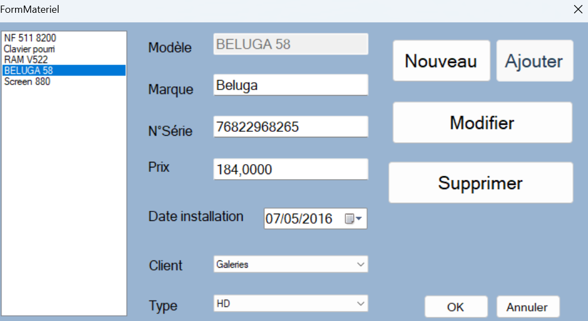
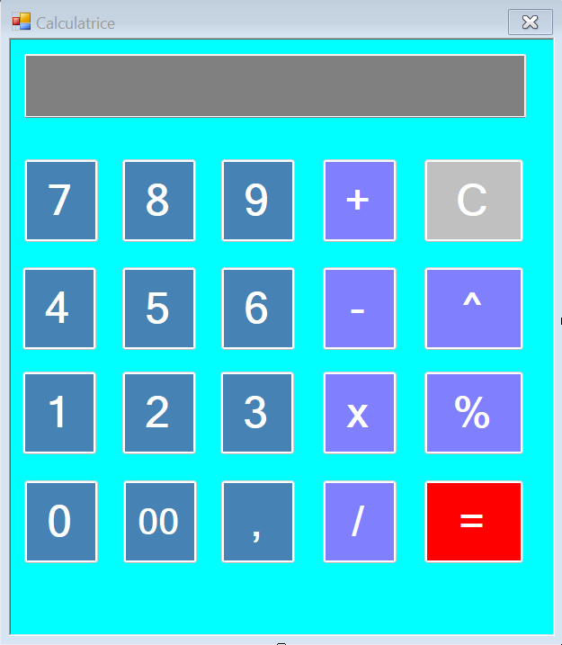
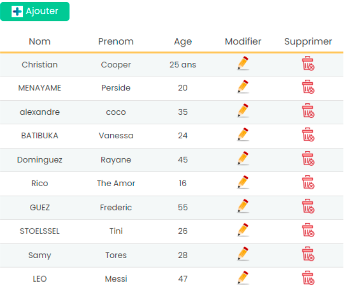
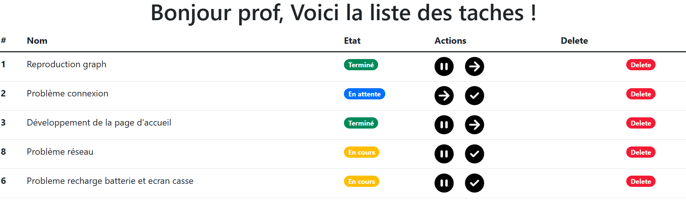
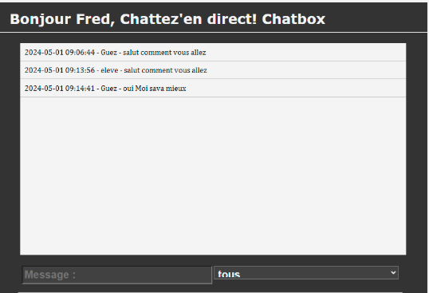
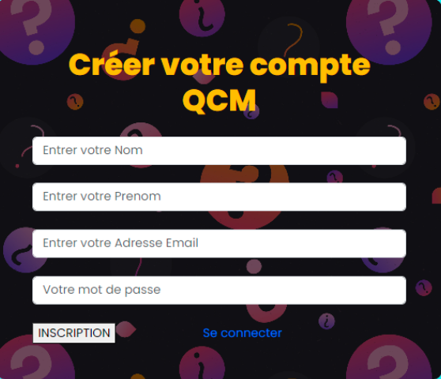
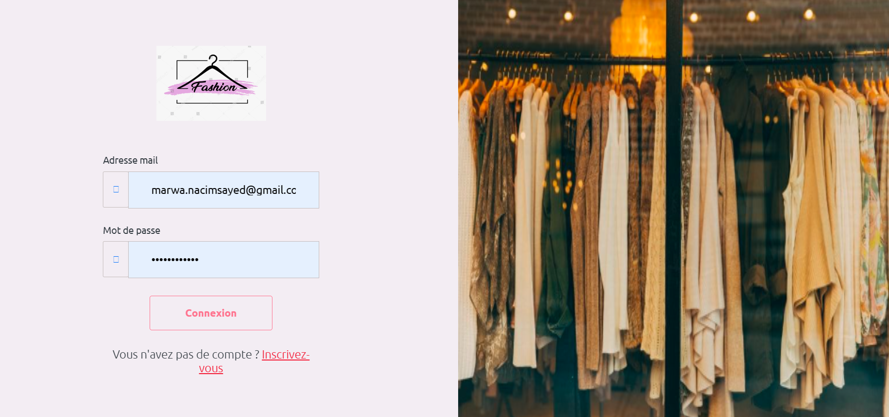
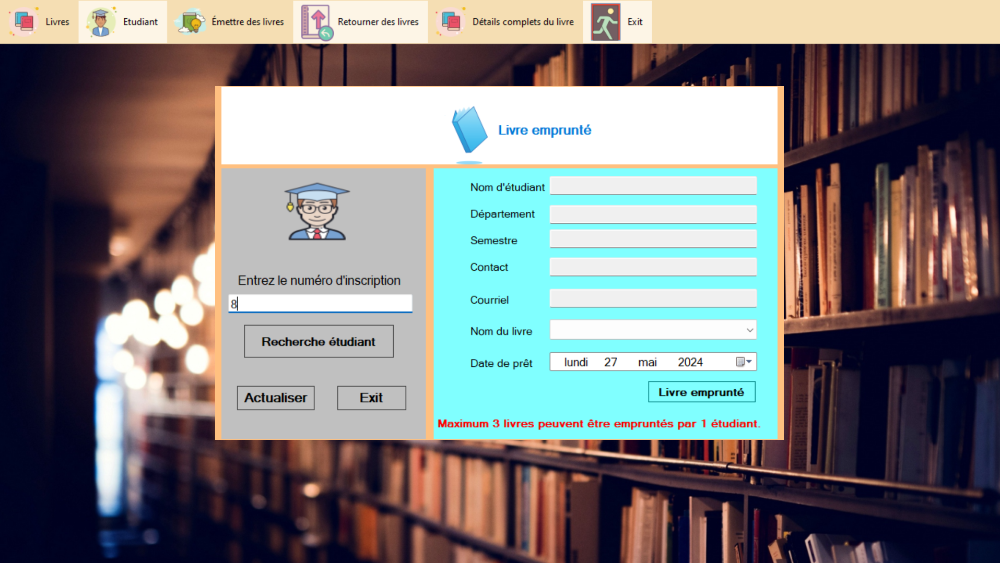
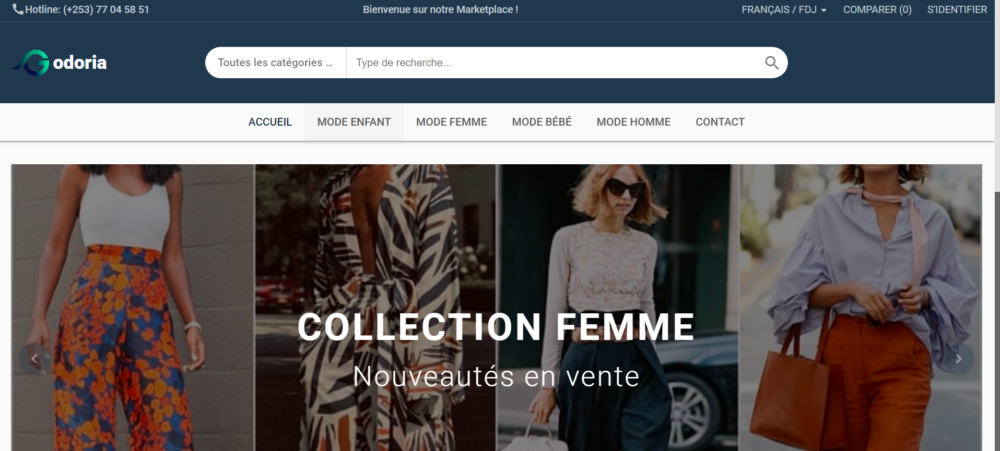
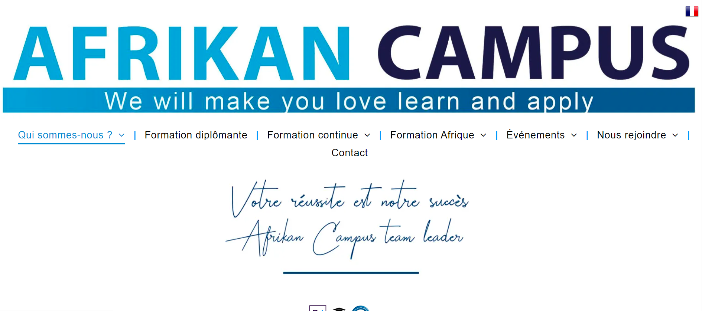

NACIM SAYED Marwa
Je suis étudiant en deuxiéme année de BTS SIO ( Services Informatiques aux Organisations),Option
SLAM (Solutions Logicielles et Application Métier)
l'option spécialisée pour le développement, au seins
de formation institut F2I.
VOIR MON LINKEDIN
Bonjour!
Bonjour et bienvenue sur mon portfolio ! Je m'appelle Marwa Nacim Sayed, j'ai 21 ans et je suis actuellement en deuxième année de BTS Services Informatiques aux Organisations (SIO) avec une spécialisation en développement web à l'Institut F2I. J'ai débuté mon parcours avec un baccalauréat ES. Mon voyage académique reflète ma détermination à élargir mes horizons, avec un focus particulier sur le développement web. À l'Institut F2I, j'ai cultivé une solide base technique et créative dans ce domaine en constante évolution. Chaque projet que j'entreprends est une opportunité d'appliquer mes compétences et d'explorer de nouvelles facettes du développement web. Mon portfolio est une fenêtre ouverte sur mon parcours, mes compétences et mes aspirations professionnelles. Je suis impatiente de partager mes réalisations et de continuer à grandir en tant que développeuse web.
Voir Mon CV
Qu'est ce que le BTS SIO ?
Le Brevet de Technicien Supérieur aux Services Informatiques aux Organisations (BTS SIO), s'adresse à ceux qui souhaitent se former en deux ans aux métiers d'administrateur réseau ou de développeur. Pour par la suite intégré directement le marché du travail ou continuer des études, dans le domaine de l'informatique.
Le BTS SIO propose deux spécialités :
OPTION SISR
OPTION SLAM
L’acronyme SISR signifie « Solutions d’infrastructure, systèmes et réseaux ».
L’option SISR est donc d’abord destinée aux étudiants qui s’orientent vers les métiers liés à la conception et la maintenance d’infrastructures réseaux. Avant tout cela correspond à assurer la sécurité, la maintenance et l’installation des réseaux et des équipements informatiques font partie des principales missions des futurs administrateurs, techniciens ou pilotes d’exploitation.
Donc voici quelques exemples de métiers que les étudiants peuvent exercer après le BTS SIO option SISR :
=>Technicien réseau — télécoms
=>Technicien systèmes et réseaux
=>Administrateur systèmes et réseaux
=>Support systèmes et réseaux
=>Technicien d’infrastructure
=>Pilote d’exploitation
=>Technicien de production
Le signe SLAM signifie « Solutions Logicielles et Applications Métier ».
L’option SLAM est principalement destinée aux étudiants qui s’orientent vers les métiers liés à la conception et la maintenance de programmes applicatifs. Donc grâce à des cours spécifiques, les diplômés seront capables de gérer un parc informatique ou d’administrer un réseau au sein d’une entreprise. Aussi ils pourront également gérer l’intégration, la sécurisation et la configuration des serveurs, mais aussi des postes clients et des équipements d’interconnexion.
Voici quelques exemples de métiers que les étudiants peuvent exercer après le BTS SIO option SLAM :
=>Développeur d’applications informatiques
=>Chargé d’études informatiques
=>Responsable des services applicatifs
=>Programmeur analyste
=>Programmeur d’applications
=>Technicien d’études informatiques
Mes compétences en développement
Toutes ces connaissances ont été acquises de différentes façons. Elles ont été acquises durant mes études en BTS SIO et d'autres par ma propre initiative en essayant de mettre en place des solutions. J’ai également relevé les défis organisés, ce qui permet d’effectuer des recherches et aller encore plus loin.

HTML
HTML est un langage de balisage utilisé pour créer et structurer des pages web.

PHP
PHP est un langage de programmation côté serveur souvent utilisé pour le développement web dynamique.

CSS
CSS est un langage de style utilisé pour la présentation visuelle des pages web.

JavaScript
JavaScript est un langage de programmation utilisé pour rendre les pages web interactives et dynamiques.

SQL
SQL Server est un système de gestion de base de données relationnelle développé par Microsoft, destiné à stocker, gérer et récupérer des données dans des environnements d'entreprise.
Mes outils / logicielS

GitHub
GitHub est une plateforme de développement collaboratif basée sur Git, permettant aux développeurs de partager, de collaborer et de gérer des projets de logiciels.

Wamp/Xamp
WAMP/XAMPP sont des logiciels qui regroupent Apache, MySQL et PHP pour faciliter le développement d'applications web en environnement local.

MySQL
MySQL est un système de gestion de base de données relationnelle open source très populaire et largement utilisé dans le développement web.

Visual Studio
Visual Studio Code est un éditeur de code source gratuit et open-source développé par Microsoft, utilisé pour le développement de logiciels.
Visual community
Visual Studio Code, l'outil gratuit et open-source de Microsoft, est incontournable pour le développement de logiciels en C# dans la communauté.
Me projet scolaire

Gestion Materiel en c#
Développement d'un logiciel de Gestion de materiel réalisée en C#
Windows Forms (.NET Framework, C#)
Compte rendu

Calculatrice en c#
Cette application logicielle permettant aux utilisateurs d'effectuer diverses opérations mathématiques de manière simple et efficace.
Compte rendu

CRUD: GESTION DES EMPLOYÉS
L'application de gestion des employés basée sur les opérations CRUD offre une solution complète et efficace pour la gestion des ressources humaines
Compte rendu

DEV OUTIL gESTION DE TICKETS
Réalisation d'un outil de gestion de tickets utilisant PHP, HTML, CSS et
MySQL.
Compte rendu

Système de chat en ligne
Réalisation d'un système de chat en ligne utilisant PHP, HTML, CSS et
MySQL.
Compte rendu

Gestion qcm auto
Jeu de QCM avec interface administrateur permettant d'ajouter, de
modifier et de supprimer des questions - Technologies : HTML, CSS,
Bootstrap, PHP, MySQL
Compte rendu
Project E5

PP1: DEV site d'annonce
La création d'un site qui permet aux utilisateurs des publiés des annonces et de contacter les acheteurs
Compte rendu

PP2: Dev application Gestion biblio
Développement d'un logiciel de Gestion de bilbiothèque réalisée en C#
Windows Forms (.NET Framework, C#)
Compte rendu
Mon stage de 1ère année et de 2ème année en BTS

Stage en 1ère année
Pour mon stage de première année, j'ai eu l'opportunité de
travailler au sein de l'entreprise Godoria Marketplace. Pendant cette période,
j'ai été impliqué dans plusieurs missions clés qui m'ont permis de développer
mes compétences et d'acquérir une expérience précieuse dans le domaine de la
technologie. J'ai effectué plusieurs missions, notamment en tant que testeur
des environnements du code avec les outils Cypress et Selenium, en utilisant
avancée de Trello pour la gestion de projets, et aussi en effectuant les ajouts
de produits sur le site Godoria.
RAPPORT DE STAGE

Stage en 2ème année
J'ai effectué mon stage en 2ème année dans une entreprise,
qui offre des formations diplômantes et continues en alternance. Pour cette
mission, j'étais chargé de faire du SEO avec mon tuteur de stage. Nous avons
effectué des mises à jour pour le site via l'interface Ionos, ce qui m'a permis
d'apprendre sur le code Ionos.
RAPPORT DE STAGE
La veille technologique, c'est quoi ?
La veille technologique est un processus d'identification et d'analyse des innovations technologiques dans un secteur d'activité donné. Elle permet aux entreprises de devancer leurs concurrents, de développer de nouveaux produits et services et d'exploiter de nouvelles opportunités.
Les principaux outils de ma veille
Les types de sources les plus utilisés sont :
=>Google Alerts
https://www.google.fr/alerts#2:0
=>Talkwalker Alerts
https://tinyurl.com/465ayreb
=>Scoop.it
https://www.scoop.it/topic/embedded-software
>Feedly
https://tinyurl.com/2f4brwr5
=>Réseaux sociaux
Twitter:https://x.com/Cyberologue_fr
Sujet de ma veille
Comme sujet de Veille Technologique j’ai choisi
<< cybersécurité>>.
Compte rendu
Contactez-moi
N’hésitez pas à me contacter pour toutes questions ou renseignements complémentaires via ce formulaire.